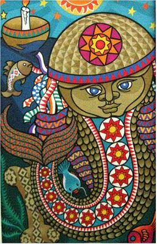

Lenda do Cabeça de Cuia
Lenda do Cabeça de Cuia Crispin era um jovem pescador que vivia com sua mãe, na vila do Poti, em Teresina. A vida dos dois era muito difícil, pois faltavam muitas coisas, inclusive comida. Como a mãe era doente, Crispin começou a trabalhar muito cedo para o sustento da família. Um dia, o jovem não conseguiu pescar e em sua casa não tinha nada para comer, então, pediu a mãe que fizesse algo, pois ele estava com muita fome. A senhora fez uma sopa bem rala apenas com osso de boi e o pescador detestou.
Leia mais.Pedra do Castelo
Mais uma lenda/curiosidade do Piauí é que dizem que um rei que morava num castelo enorme de torres bem altas costumava promover festas que se transformavam em orgias e terminavam em carnificina. Acontece que um dia Deus enviou um anjo disfarçado de convidado para transformar todos em pedra na hora dos assassinatos. Por isso o nome: Pedra do Castelo. Curioso, não?
Leia mais.